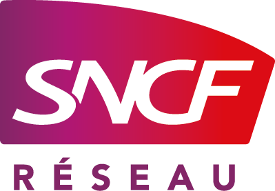

SNCF réseau

Technicien Support Systèmes et Réseaux en Alternance
Nom de l'entreprise : SNCF Réseau
Secteur d'activité : ESTI - Etablissement des Services Télécom et Informatique
Equipe : Informatique - Système et Réseau
Localisation : Toulouse, Midi-Pyrénées
Avec plus de 50 0000 collaborateurs, SNCF Réseau est un établissement public de l'Etat français qui a pour mission d'entretenir, moderniser, développer et exploiter le réseau ferré national.
Le réseau en Occitanie compte 2 600 km de lignes. L'occitanie apppartient à l'ESTI Atlantique, et notre secteur comprend toute la région Midi-Pyrénées. L'équipe Système et Réseau gère l'ensemble des équipements réseau de la région, ainsi que la mise en place et la maintenance des serveurs relatifs à l'activité des agents SNCF travaillant en occitanie.

Missions Réalisées
Préparation et migration de postes
- Création et gestion des comptes utilisateurs et groupes
- Application stratégies de groupe (GPO)
- Gestion des permissions et droits d'accès
- Masterisation des postes et installation des application metiers
- Déplacement et déploiment de postes aux agents de la régions
- Suivi et avancement des Bon travaux
- Documentation des procédures d'administration
Support et maintenance réseau
- Diagnostic et résolution d'incidents réseau
- Application des configuration de switchs en fonction des différent firmwares (Huawei, Aruba, HP)
- Configuration et application des VLANs utilisés - gestion des sous réseaux
- Configuration du routage
- Analyse de trafic réseau avec outils de monitoring (Wireshark)
Migration de l'infrastructure réseau sur le territoire Midi-Pyrénées
- Prise de rendez vous avec les gares/agent et déplacement sur les emprises SNCF
- Prise en compte de la qualité de service et limitation des coiupures réseaux pendant l'installation physique
- Suivi et vérification du bon fonctionnement des nouveaux équipements
- Base de données de l'inventaire et schéma réseau des différentes parties du réseau SNCF Midi-Pyrénées
Gestion des chemin physique de Fibre Optique
- Gestion des incidents (vol de cable, incendies, travaux) provoquant une coupure des chemin FO de nos équipements
- Prévision et re-routage des liens pour permettre une continuité de servce sur les zones affectées
- Collaboration avec les équipes télécom
- Schématisation et recencement de nos réseau FO
Supervision de serveur
- Installation physique de serveur Windows
- Configuration des équipements réseau pour permettre l'accès aux serveurs
- Remplacement de disque dur et gestion du stockage nécessaire
- Statégies de sauvegardes
- Mise en place de machine virtuelles de supervision de serveur (distribution linux RedHat)
Outils et Technologies Utilisés
Systèmes d'exploitation
- Windows Server
- Linux (Ubuntu/RedHat)
- Windows 11 - Masters conforme aux stratégies et besoin métiers de l'entreprise
Réseaux
- Huawei
- HP
- Aruba
- 3Com (déprécié)
- Gestion Fibre optique
- Stock et besoin en cable cuivre
Sécurité
- Active Directory
- Configuration réseau protégées (protocoles de chiffrement, gestion des mots de passes)
Outils de monitoring
- Wireshark
- Sonde de températurese - humidité et supervision
Compétences Acquises
Cette alternance m'a permis de développer des compétences techniques solides dans l'administration de systèmes et réseaux, ainsi qu'une meilleure compréhension des enjeux de sécurité informatique en entreprise. L'échelle du réseau SNCF de la region Occitanne m'a permis une prise de conscience de la logistique nécessaire pour assurer le fonctionnement d'un réseau de cet ampleur. J'ai également amélioré mes compétences en communication, en résolution de problèmes dans un contexte professionnel, ainsi qu'en supervision et gestion globale des inventaires et des besoins en équipements (de la commande à la mùaintenance en passant par l'installation).